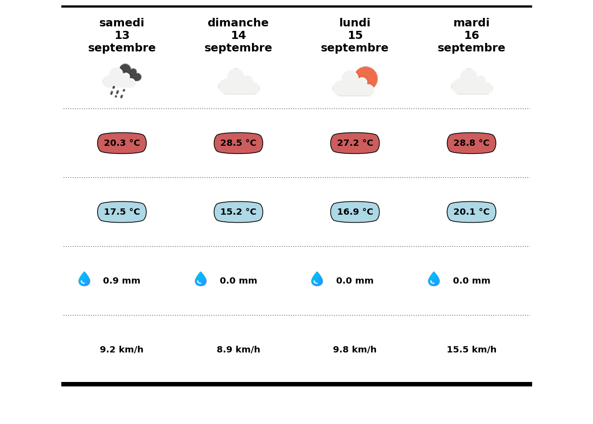

import datetime
import pandas as pd
import matplotlib.pyplot as plt
import requests
from PIL import Image
import json
import urllib
# --- Dates ---
aujourd_hui = datetime.date.today()
fin = aujourd_hui + datetime.timedelta(days=3)
# --- Téléchargement des données météo ---
url_daily = (
f"https://api.open-meteo.com/v1/meteofrance?"
f"latitude=43.6109&longitude=3.8763&"
f"daily=weathercode,temperature_2m_max,temperature_2m_min,precipitation_sum,"
f"windspeed_10m_max,winddirection_10m_dominant&"
f"timezone=GMT&start_date={aujourd_hui}&end_date={fin}&format=csv"
)
url_hourly = (
f"https://api.open-meteo.com/v1/meteofrance?"
f"latitude=43.6109&longitude=3.8763&"
f"hourly=windspeed_10m&start_date={aujourd_hui}&end_date={fin}&format=csv"
)
# Téléchargement avec timeout
r_daily = requests.get(url_daily, timeout=30)
with open("./data/db.csv", "wb") as f:
f.write(r_daily.content)
r_hourly = requests.get(url_hourly, timeout=30)
with open("./data/db1.csv", "wb") as f:
f.write(r_hourly.content)
# --- Lecture des CSV ---
df = pd.read_csv("./data/db.csv", skiprows=3).fillna("-")
df1 = pd.read_csv("./data/db1.csv", skiprows=3)
df1.rename(columns={"windspeed_10m (km/h)": "vent"}, inplace=True)
# Renommer les colonnes pour plus de clarté
df.rename(columns={
"weathercode (wmo code)": "code",
"temperature_2m_max (°C)": "tmax",
"temperature_2m_min (°C)": "tmin",
"precipitation_sum (mm)": "pluie",
"windspeed_10m_max (km/h)": "vent",
"winddirection_10m_dominant (°)" : "direction"
}, inplace=True)
#valeur de la pluie pour l'affichage des gouttes
pluie = df['pluie'].tolist()
#ajout des unités
for col, unit in zip(['tmax','tmin','pluie','vent'], ['°C','°C','mm','km/h']):
df[col] = df[col].astype(str) + f' {unit}'
#On transpose la dataframe
df = df.T
#calcul du vent moyen et remplacement de la valeur dans db
for i in range(4):
subset = df1.loc[24*i : 24*(i+1)-1]
moyenne = subset['vent'].mean()
df.iloc[5,i] = round(moyenne , 1)
df.iloc[5,i] = str(df.iloc[5,i]) + ' km/h'
#Création du tableau contenant les informations voulues
fig = plt.figure(figsize=(14,10), dpi=300)
ax = plt.subplot()
ncols = df.shape[1]
nrows = df.shape[0] - 1
ax.set_xlim(0, ncols + 1)
ax.set_ylim(0, nrows)
ax.set_axis_off()
columns = df.iloc[0].tolist()
# création des dates (nom du jour/numéro/mois)
noms_jours = ["lundi", "mardi", "mercredi", "jeudi", "vendredi", "samedi", "dimanche"]
noms_mois = ["janvier", "février", "mars", "avril", "mai", "juin", "juillet", "août", "septembre", "octobre", "novembre", "décembre"]
for i in range(ncols):
df.iloc[0,i] = pd.to_datetime(df.iloc[0, i], format="%Y-%m-%d")
jour_semaine = noms_jours[df.iloc[0,i].weekday()]
numero_jour = df.iloc[0,i].day
mois = noms_mois[df.iloc[0,i].month - 1]
df.iloc[0,i] = f"{jour_semaine}\n{numero_jour}\n{mois}"
#nom des colonnes
for i in range(ncols):
ha = 'center'
ax.annotate(
xy=(i+1, nrows-0.7),
text=df.iloc[0,i],
ha=ha,
va='bottom',
weight='bold',
fontsize = 15
)
for j, column in enumerate(columns):
ha = 'center'
ax.annotate(
xy = (j+1, nrows - 2),
text = df.iloc[2,j],
ha = ha,
va = 'center',
weight='bold',
fontsize = 12 ,
bbox=dict(boxstyle="round4",pad = 0.8, fc="indianred")
)
for j, column in enumerate(columns):
ha = 'center'
ax.annotate(
xy = (j+1, nrows - 3),
text = df.iloc[3,j],
ha = ha,
va = 'center',
weight='bold',
fontsize = 12 ,
bbox=dict(boxstyle="round4", pad = 0.8, fc="lightblue")
)
# Ajout du reste des valeurs dans le tableau
for i in range(4,nrows):
for j, column in enumerate(columns):
ha = 'center'
ax.annotate(
xy = (j+1, nrows - i),
text = df.iloc[i,j],
ha = ha,
weight='bold',
fontsize = 12 ,
va = 'center'
)
#création des lignes de séparations
ax.plot([0.5, 4.5], [nrows, nrows], lw=6, color='black', marker='', zorder=4)
ax.plot([0.5, 4.5], [0.5, 0.5], lw=6, color='black', marker='', zorder=4)
for x in range(1, nrows - 1):
ax.plot([0.5, 4.5], [x+0.5, x + 0.5], lw=1.15, color='gray', ls=':', zorder=3 , marker='')
# fichier json des icones
with open("./data/ic.json", "r") as icone:
df_ic = json.load(icone)
#fonction pour insérer les images
def image_code(code, ax):
code_int = int(float(code))
url = df_ic[str(code_int)]['day']['image']
image = Image.open(urllib.request.urlopen(url))
ax.imshow(image)
ax.axis('off')
return ax
#def image_code(code, ax):
# """
# Affiche l'image correspondant au code météo dans l'axe ax.
# - code : valeur de la colonne 'code' (peut être float, str ou "-")
# - ax : matplotlib axis
# """
# try:
# # ignorer les valeurs manquantes
# if code == "-" or pd.isna(code):
# return ax
#
# # convertir en int pour correspondre aux clés du json
# code_int = int(float(code))
#
# # récupérer l'URL de l'image
# url = df_ic[str(code_int)]['day']['image']
# image = Image.open(urllib.request.urlopen(url))
# ax.imshow(image)
# ax.axis('off')
# except (ValueError, KeyError, urllib.error.URLError):
# # si code non trouvé ou problème réseau, on ignore l'image
# ax.axis('off')
# return ax
#Transformation en différents type de coordonnées
DC_to_FC = ax.transData.transform
FC_to_NFC = fig.transFigure.inverted().transform
# Take data coordinates and transform them to normalized figure coordinates
DC_to_NFC = lambda x: FC_to_NFC(DC_to_FC(x))
# Ajout des images du temps
ax_point_1 = DC_to_NFC([0.25, 0.25])
ax_point_2 = DC_to_NFC([0.75, 0.75])
ax_width = abs(ax_point_1[0] - ax_point_2[0])*2
ax_height = abs(ax_point_1[1] - ax_point_2[1])*2
for i in range(ncols):
ax_coords = DC_to_NFC([i + 0.5, 4.4])
ico_ax = fig.add_axes([ax_coords[0], ax_coords[1], ax_width, ax_height])
image_code(df.iloc[1,i], ico_ax)
#Ajout des gouttes d'eau
gt_point_1 = DC_to_NFC([0.25, 0.25])
gt_point_2 = DC_to_NFC([0.5, 0.5])
gt_width = abs(gt_point_1[0] - gt_point_2[0])
gt_height = abs(gt_point_1[1] - gt_point_2[1])
for i in range(ncols):
ax_coords = DC_to_NFC([ i + 0.55 , 1.9])
if type(pluie[i]) == float and pluie[i]>= 0:
goutte_ax = fig.add_axes(
[ax_coords[0], ax_coords[1], gt_width, gt_height]
)
image = Image.open("./data/goutte.png")
goutte_ax.axis('off')
goutte_ax.imshow(image)
#Ajout des directions du vent
v_point_1 = DC_to_NFC([0.25, 0.25])
v_point_2 = DC_to_NFC([0.4, 0.4])
v_width = abs(v_point_1[0] - v_point_2[0])
v_height = abs(v_point_1[1] - v_point_2[1])
for i in range(ncols):
if type(df.iloc[6,i]) == float and df.iloc[6,i]>= 0:
ax_coords = DC_to_NFC([ i + 0.55 , 0.9])
vent_ax = fig.add_axes(
[ax_coords[0], ax_coords[1], v_width, v_height]
)
vent = Image.open("./data/vent.png")
vent = vent.rotate(-df.iloc[6,i])
vent_ax.axis('off')
vent_ax.imshow(vent)
plt.savefig(
'meteo.svg',
dpi=300,
transparent=True)